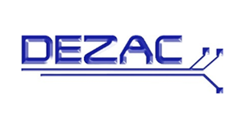
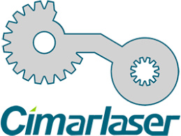
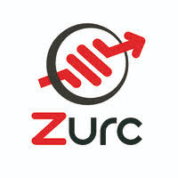

Datos de la empresa
Circutor es una empresa ubicada en Viladecavalls, especializada en soluciones de eficiencia energética. Desarrolla productos como analizadores de red, cargadores eléctricos, reguladores de energía reactiva, entre otros.
Cuenta con diferentes departamentos. En mi caso, estoy asignado al departamento de Sistemas de Información (IT).
Empresas del grupo Circutor
El grupo Circutor está compuesto por varias empresas que, aunque operan en diferentes áreas, comparten la misma misión de mejorar el uso de la energía eléctrica. Estas empresas incluyen:
- Dezac: Situada en el mismo edificio que Circutor, Dezac se especializa en la automatización industrial, ofreciendo soluciones integrales que optimizan procesos y mejoran la productividad. 
- Intercap: Dedicada a la fabricación de componentes electrónicos de alta calidad, Intercap se asegura de que los productos cumplan con los estándares más exigentes del mercado.
- Aplitech: Focalizada en la aplicación de tecnologías avanzadas para el desarrollo de productos innovadores, Aplitech trabaja en la intersección de la tecnología y la ingeniería.
- Cimarlaser: Especializada en sistemas de corte y grabado láser, Cimarlaser ofrece soluciones precisas y eficientes para diversas industrias. 
- Instrumentalización Industrial Zurc: Esta empresa se dedica a la fabricación y mantenimiento de instrumentos de medición y control industrial, asegurando la precisión y fiabilidad en diversas aplicaciones. 
Vial Sant Jordi s/n – 08232 Viladecavalls, Barcelona
Carrer Vallès, 32, 08130 Santa Perpètua de Mogoda, Barcelona
Pol.Ind, Carrer de la Selva, 3, 08211 Pla de la Bruguera, Barcelona
Av. del Vallès, 726, 08227 Terrassa, Barcelona
Carrer Innovació Nº 3, Pol. Ind. Can Mitjans, 08232 Viladecavalls
A lo largo de mi estancia, he podido observar cómo cada una de estas empresas contribuye al objetivo común de mejorar el uso de la energía eléctrica a través de la innovación y la eficiencia. Esta experiencia me ha permitido no solo aplicar mis conocimientos técnicos, sino también comprender la importancia de la colaboración y la integración de tecnologías en entornos empresariales interconectados.
Organización interna del departamento

Funciones del Departamento
El departamento IT se encarga del mantenimiento de servidores, gestión de redes, soporte técnico a empleados, gestión de cuentas corporativas, seguridad informática y administración de sistemas.
- Director del Departamento: Responsable de la gestión estratégica y toma de decisiones clave dentro del departamento. Supervisa los procesos más relevantes y coordina al equipo.
- Administrador de Sistemas: Gestiona y mantiene el servidor, así como toda la infraestructura tecnológica asociada. Se encarga de garantizar el buen funcionamiento y la seguridad de los sistemas informáticos.
- Técnico/a de Atención al Usuario: Proporciona soporte técnico a los usuarios ante incidencias informáticas. Se encarga de resolver problemas y ofrecer asistencia en el uso de sistemas y aplicaciones.
- Equipo de Desarrollo de Software Corporativo: Diseña e implementa aplicaciones y funcionalidades específicas para cubrir las necesidades internas de la organización.
Recursos disponibles
Los encargados de atención al usuario disponemos de:
- Portátil
- Periféricos esenciales (teclado, raton, monitor,...)
- Pendrive
- Tarjeta de acceso para fichar y acceder a los sitios de la empresa
- Móvil de empresa
Mi contrato
Soy becario en la empresa Circutor mediante el programa de Formación Dual.
Mi contrato de prácticas dual lo gestiona Zurc Instrumentalización Industrial, que es la empresa responsable de supervisar oficialmente mi formación. Sin embargo, la mayor parte de mi trabajo como técnico de soporte IT lo realizo en Circutor, donde tengo mi puesto y comparto el día a día con otros compañeros en prácticas.
Aunque paso la mayor parte del tiempo en Circutor, también hago visitas regulares a Zurc para tareas de mantenimiento, copias de seguridad y, de forma puntual, para resolver incidencias técnicas.
Beneficios de empresa
La empresa dispone de varios beneficios como una cafeteria y a un comedor de empresa.Además, entre los beneficios de Circutor, destaca la posibilidad de elegir una cesta de Navidad, así como un paquete de bienvenida recibido al iniciar las prácticas, que incluía una mochila, libretas, una cantimplora, un pendrive, varios bolígrafos y un soporte para el móvil.
Horas realizadas
Horas del período de prueba: 49 horas
Horas totales como becario: 812 horas
Fechas de la estancia
Período de prueba: del 10 de junio al 28 de junio de 2024
Período de prácticas (Dual): del 1 de julio hasta la actualidad
Días no realizados
Durante el período de prácticas no realicé prácticas los siguientes días:
- 11 de junio --> motivos escolares
- 1 de julio --> motivado por la empresa
- 1 de agosto - 30 de agosto --> vacaciones escolares
- 3 de septiembre --> motivos personales
- 14 de noviembre --> motivos personales
- 27 de diciembre --> motivado por la empresa
- 31 de diciembre --> motivado por la empresa
Relaciones profesionales y seguimiento de la estancia
Tutor del instituto: Albert Gómez
Tutor de la empresa: Raul Salvador - Help Desk
Comunicación con los tutores: La comunicación tanto con los tutores del instituto como con el tutor de la empresa ha sido fluida y constante, permitiendo resolver dudas y recibir orientación durante toda la DUAL.
Comunicación con compañeros y usuarios: La relación con los compañeros de la empresa y los usuarios ha sido cordial y profesional, facilitando el trabajo en equipo.
Valoración del seguimiento de la doble tutoria (entidad-instituto): El seguimiento conjunto entre la empresa y el instituto ha sido satisfactoria, asegurando un buen desarrollo de las prácticas y aprendizaje.